Great strides have been made in the field of medicine. We have gone from barbers performing amputations to robots acting as surgeons. Humanity’s accomplishments come from people always seeking out further progress and refusing to settle. Flagstaff Medical Center (FMC), my hometown hospital, embodies this resolve. With more than half of in-hospital cardiac arrests ending in death, it is no wonder that they invested in the Zoll R-Series Defibrillator. Like normal defibrillators, Zoll can provide an electrical current to a patient in an attempt to restore heart activity. What makes Zoll unique is the added real-time feedback feature. CPR metrics are tracked and given to healthcare professionals as they attempt to help the patient, and are then stored for later review. Of course, even something as advanced as this means little without having the initial education. So FMC also provides its staff with the Resuscitation Quality Improvement (RQI) program: CPR training that believes short time intervals between lessons results in longer skill retention. To find out if Zoll was worth the investment and if RQI is working as intended, I will be performing data analysis on these two areas using information already stored by the hospital. My research could lead to improvements at FMC in CPR practice and training, as well as help contribute knowledge to the field of cardiology.
When my college counselor first brought up Northern Arizona Healthcare’s (NAH) proposal of doing data analysis on Zoll defibrillators, I was skeptical. I had loved statistics class, true. But was that enough to research a subject I had no clue about? What did I know about healthcare? About defibrillators of all things? Still, I decided to at least do some research.
Soon, the concept of a defibrillator went from “that thing that shocks people when they’re having a heart attack” to something very tangible. I even began asking my own questions. It was through this first initial investigation that I truly started to make this project my own. I was eventually able to create a proposal that I’ve attached here in case anyone wants to read 11 more pages!
In the simplest terms, I’m going to be performing data analysis on two different databases: Zoll defibrillators and RQI training. All of the data comes from healthcare practitioners at Flagstaff Medical Center (FMC), but the latter consists of real-life CPR cases instead of simulated ones like the former. I’m hoping to see where, if at all, improvements could be made when it comes to both teaching and performing CPR. My internal advisor and former AP Statistics teacher, Jessica B, as well as my external advisors from NAH, Jessica O and Floye B, will be guiding me through all of this.
What have I done so far?
It probably doesn’t come as a surprise that there’s a lot of paperwork to get through in order to intern at FMC. The vaccinations and forms were tedious, but the required courses were actually pretty cool. The hospital takes ethics incredibly seriously, and I found myself learning a lot about both the historical and logistical aspects of morality in healthcare.
Yesterday, I had the opportunity to meet with a lot of awesome people from NAH as well as other BASIS seniors who are doing projects with the hospital too. We got to talk about our projects (which surprisingly got easier when the CEO arrived, I suppose pressure makes diamonds!) and hash out scheduling details.
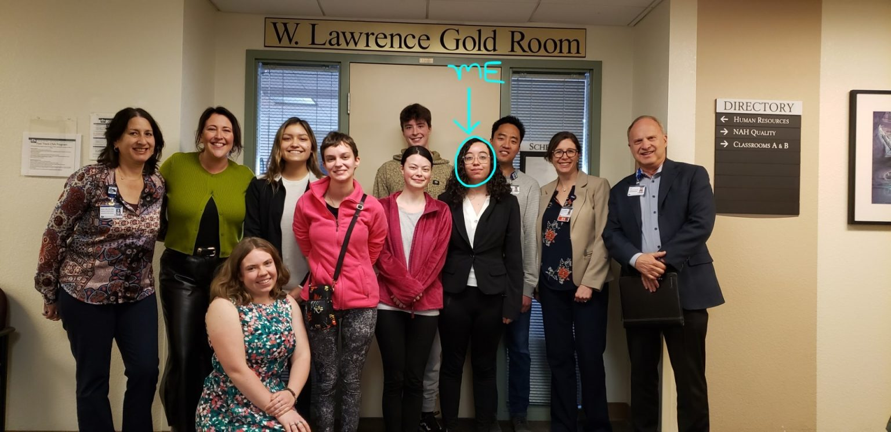
We took a group photo after the meeting.
An NAH ID of Sedona
We also received ID badges, and I felt incredibly official from that moment on!
What’s in store?
For this upcoming week, there’s a couple of things on my to-do list. I’ll be organizing my literature review into an evidence table, which will hopefully help me in the long run. I’m so glad I did annotations for each source I looked at, or this task might feel a lot more daunting.
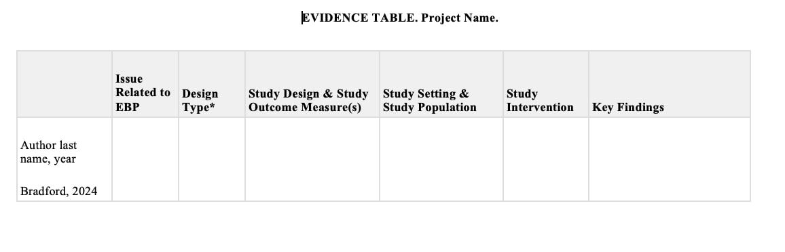
There’s also an expectation that I begin narrowing my scope just a bit because a lot of information has been collected and I only have 10 weeks to analyze it. I’m really excited to get my first peek at this, hopefully sometime next week. Who would have thought I’d be geeking out over the possibility of seeing a spreadsheet?
I’ll be posting every Wednesday, so please check back then and ask as many questions as you want!
-Sedona O-
An Agglomeration Of Things | 2/28
February 28, 2024 11:55 am
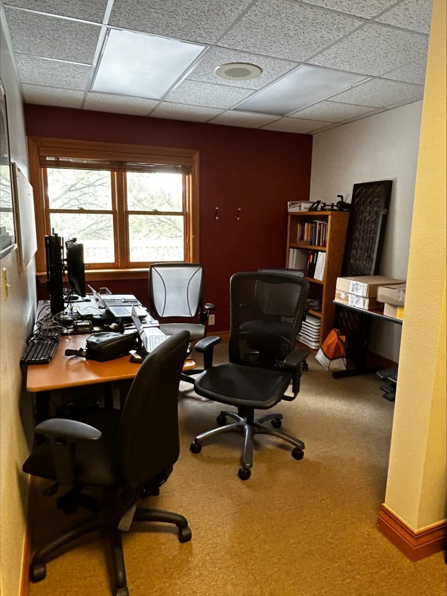
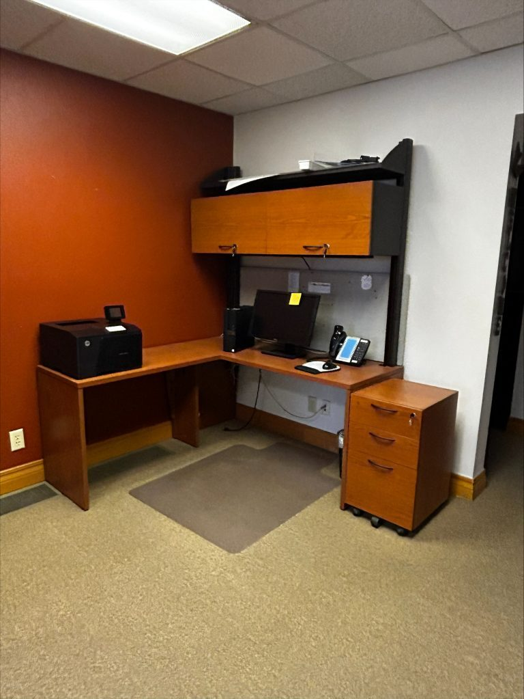
That’s Nathan with me, another BASIS senior doing a project with the hospital.
There’s nothing like sitting in an empty office with a computer to make you feel like you’re more important than you probably are. It’s certainly done wonders for my productivity though. Apparently, there is something beneficial to not working on your bed while lying down.
I’ve learned things
Speaking of not lying down, I’ve been busier than ever this last week! The other day, all of the hospital senior project kids had a meeting with Alejandra F, the quality improvement program manager at Northern Arizona Healthcare (NAH). She broke down evidence-based practice for us and things started to make a lot more sense afterwards. In its simplest form, the goal is to take the most recent research there is, analyze it, and apply it to a clinical problem. A lot of times, it takes years for a helpful discovery to be applied to real life. Of course, there’s a reason for that. You can’t just assume that the results of one experiment work everywhere. We have peer reviews for a reason, people. But the inspiration for evidence-based practice lies in trying to make things more efficient and encouraging curiosity, not necessarily to skip past safety guidelines.
I would say this picture gets the point.
I suppose my project is the “search” step. If you remember from my last blog, I’m supposed to compile all research relevant to real-time feedback and CPR training in an evidence table. I actually finished my first draft and sent it over to Alejandra to check just yesterday. So I’ll probably be spending this upcoming week following her feedback. I’m just glad I now know what the protocol is when my source is an analysis of other sources. Hint: treating it like just any other piece of evidence is not a viable solution.
I’ve done things
Sometimes when you’re told to come up with 10 answerable questions, it’s as easy as…coming up with 10 answerable questions. What a revelation. Mine actually ended up being 12, and two of them still need to be checked over. So I won’t show them off just yet.
I’ll be doing things
I got an email from Floye that seems to suggest I’ll soon be getting access to a tool for data analysis called MiniTab. Hopefully, in my next post, I can talk all about it!
Reflecting on things
It’s funny, I had assumed that once I was done with classes I would be less busy. It’s quite the opposite. Sure, I’m not going to the same 6 classes a day from 8 to 4, but it feels like the weekly meetings I’m having are jam-packed with a lot of information. No time is wasted! And don’t even get me started on trying to schedule things out when you have extracurriculars too. It’s stressful at times, but it’s also a lot of fun. It feels like everything I’m doing is important, if not always to others then definitely to me.
As always, thank you for taking the time to read my ramblings. Feel free to continue asking me questions.
Progress (Might) Be Happening | 3/6
March 6, 2024 12:00 pm
You know it’s going to be a great week when you have to call IT bright and early on Monday. Evidently, receiving hospital computers and logins is not enough to actually get you access to things. No, you also have to talk to people. Oh, the horror! I’m very glad the woman on the other end of the phone was patient because she had to help four very confused students. And help she did. I can now finally figure out what MiniTab is.
Learning is Fun, Kids!
The learning never ends! The hospital has licensing for several different courses on data analysis over on the MiniTab Education Hub. So I asked Floye to sign me up for all of them. I was quite confident at first. Barcharts and histogram, I know all about th-
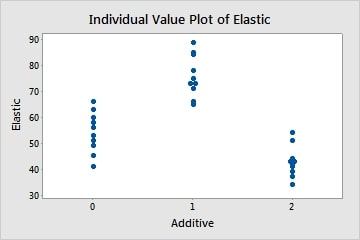
What is that.
Apparently, we also have individual value plots. Now, are those going to help me with analyzing my data sets? Maybe. Maybe not. It looks pretty cool though.
I’m quite excited for my latest lesson.
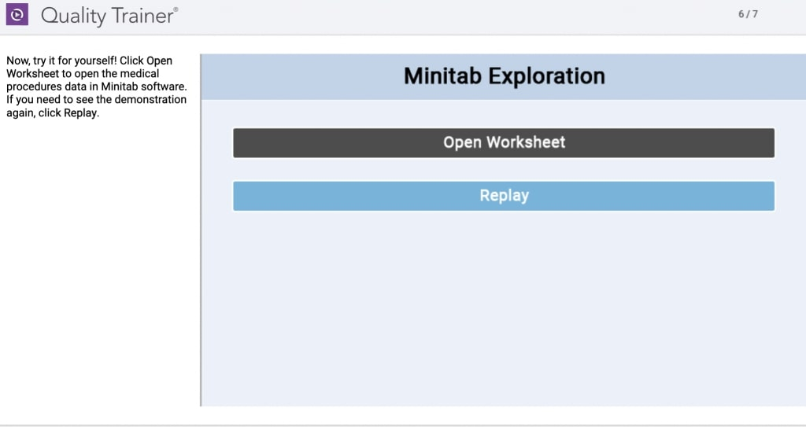
A sneak peek.
I’ll get to actually try out the MiniTab interface for myself. I’ve heard it’s capable of some amazing things.
I’m also going to be watching a video. I’m so tech-savvy. While I wait to see the RQI training in action, my advisor suggested I familiarize myself with the Zoll defibrillator. I have read about how the defibrillator works, but there’s only so much words on a page can do (ironic coming from a book lover, but the truth is the truth).
Questions…
No, the heading is not asking if you have any questions (although do feel free to ask anything you want in the comments). My twelve questions have become ten. Granted that was originally what was asked of me, but it’s the principle of things.
The RQI dataset doesn’t record “target compression fraction” and “target release velocity” as its own separate metric. Instead, it’s incorporated alongside a bunch of other metrics to create a score out of one hundred that measures performance. So these two questions had to die.
On average, what percent of the time are healthcare providers reaching target compression fraction during blind and feedback based RQI training?
On average, what percent of the time are healthcare providers reaching target release velocity during blind and feedback based RQI training?
A moment of silence for them.
Don’t cry too hard about it! I still have ten beautiful questions which I’ve expanded even more with the help of my advisor. I could share them now, but that’s no fun. When I begin analyzing the data, I’ll take some time to break down each question.
Spring Break Who?
I’ve been told that I’m supposed to “relax” because it’s “my last spring break as a high schooler”. Well, maybe I find staring at graphs relaxing! Has anyone considered that???
In all seriousness, I’ll definitely be writing a blog post next week ranting on my newfound statistical knowledge. I’ll make it fun, I promise!
(Credit to MiniTab for the photos)
Things Are Getting Tense | 3/13
March 13, 2024 12:00 pm
It seems that our town hasn’t gotten the hint with the name Spring break, I’ve heard we’re getting more snow in the next couple of days! So while I still have internet, let me update you all on my project. And I have been doing work, don’t worry! It hasn’t all been kidnapping people and forcing them to listen to Ariana Grande’s new album.
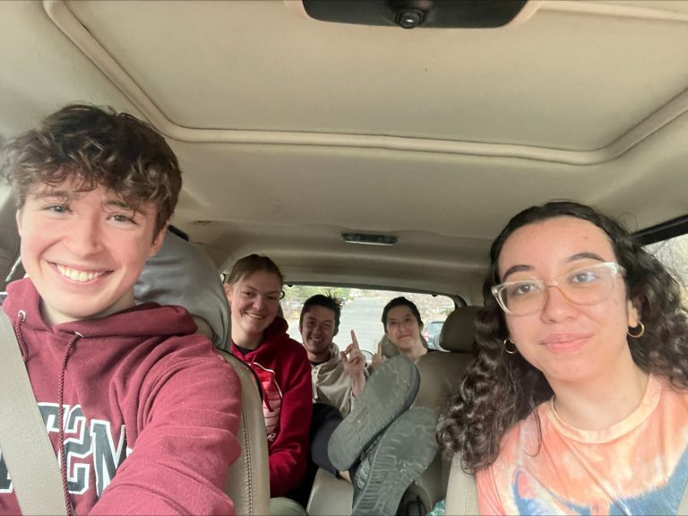
Although that was certainly a highlight. Credit to Nathan for the photo.
Past
Last Thursday, I opened up my emails and found that it had been arranged for me to set up interviews with people. And let me tell you, sending emails is a complicated process sometimes. After all, you never know when you might accidentally insult someone’s mother with your writing! My poor external advisor, Jessica O, had to read a lot of emails…from me. If it wasn’t me asking her to proofread one of my email requests then it was asking her clarifying questions about scheduling. But with her help, I now have two interviews coming up after spring break. And surprise, surprise, the people I emailed were in fact extremely nice and I even managed to not offend anyone. What a win!
Present
I’ve continued my journey with MiniTab from home. I was a bit scared to download the program on my personal computer, but it all went fine. It’s interesting because the concepts are really familiar to me, but they’re talked about in a different way so things still feel fresh.
Besides that, I’m going to begin coming up with a few questions for my interviews. Hopefully without acting like the world is ending like I did over having to create 10 specific research questions a few weeks ago.
Future
When it was first brought to my attention that I needed to update the original IRB, I wasn’t too worried.
For those that don’t know, the Institutional Review Board (IRB) has to approve any research to make sure nothing unethical is occurring. Since the data I’ll be using is de-identified, meaning it’s not connected to people’s personal information, there’s not a lot the hospital’s IRB had to approve in the first place. But since I came up with analyzing the RQI training too, I still have to make sure that’s laid out clearly. Nothing can slip through the cracks!
While I did take a look at the portal for updating my project, some of the questions confused me. I’ll need to find someone who knows what they’re doing (because I certainly don’t) after Spring break to see if I answered everything correctly.
Pretend there’s a transition here.
I’m quite nervous about my upcoming interviews, as I’ve never interviewed someone that I wasn’t already familiar with. One is going to be with the RQI coordinator, who will hopefully show me how the RQI training works in person. The other is going to be a demonstration of the Zoll defibrillator with an expert in that field. It is quite an exciting opportunity, which is the mindset I try to manifest when I begin getting a creeping sense of fear. Everyone, I need you to send good vibes my way!
Speaking of exciting opportunities, I’ve heard we have access to the data now! (This is where you cheer). Granted, I haven’t actually seen what having access means, because the news came last Friday right before Spring break started. Still, I’m looking forward to that.
Well, I’m very much over the word limit according to Google Docs (Mrs. Cohen, if you’re reading – you didn’t see this), so let me wrap things up. Thank you for reading, and feel free to ask me questions like usual!
Falling Into Place | 3/20
March 20, 2024 12:00 pm
It seems the universe decided to balance itself out and actually make me busy for once. I’m not complaining though! In fact, I’m quite excited that things are moving. There is only so much Supernatural I can watch over Spring Break.
I don’t know if I can rank all of the exciting things happening this week, so I’ll just go in a completely random order. First of all, I have access to the data. Hallelujah! I’d show you…but I’m pretty sure that violates one of the ethical rules of research. I’m literally in Ethics Bowl! I’d be a double violation. We had a meeting with Alejandra F. who taught us some cool Excel features. My data is already organized into Excel like she recommended, but I’ll definitely be using some of the tools she taught us to organize it.
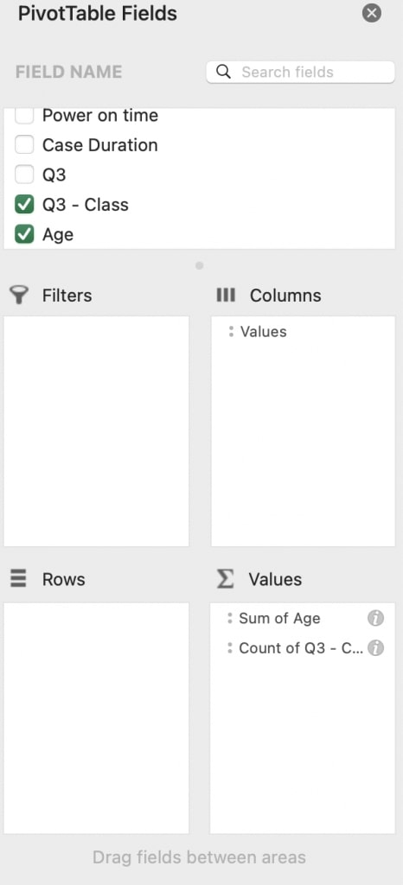
You know, this pivot table stuff would have been useful a few months ago when I was doing a class project. So many hours…wasted (although can you consider a learning opportunity a waste? Sometimes, yes!)
Speaking of learning, some of that did indeed happen. I finished the 7-hour long course: Foundations of Data Analysis. I never actually gave the title because for some reason, I thought this was the only course available. Imagine my surprise when I see all of this.
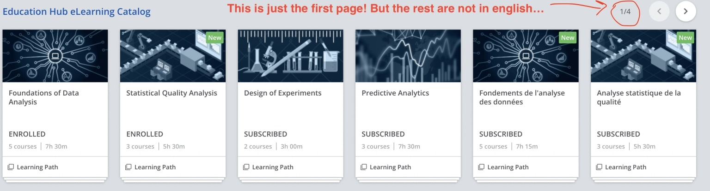
It turns out that I can be wrong. Who would have thought? Ignore the ones in other languages, I’m not ambitious (not yet, anyways).
So now onto the next course: Statistical Quality Analysis. My only goal for these courses? To not have to hear, “beyond this scope of the course”. I swear, everytime I heard that, it was preceded by something that seemed to be needed for my project.
In between figuring out how to transfer the data from Excel to MiniTab and absorbing more statistical knowledge, I’ll be meeting with people! I mentioned this in my last blog post, and while I’m still nervous, I’ve also had a really good talk with my advisor, Jessica O, who put me at ease. So as long as I don’t get lost right before the meeting…then I’d say it was a success! Today I’ll also be meeting with Keli O (she’s the one who taught us interviewing strategies, you guys are taking notes, right?) to get some advice on holding these meetings. That also made me feel pretty good. I don’t know if I’ve said it before, but all of the people at Northern Arizona Healthcare have been ridiculously nice.
Enough sappiness! Let’s talk about me. I finally got a date for my final presentation! I’m sure every single person who has ever read my blog has been waiting with bated breath (or maybe that’s just my grandmother). It’ll be May 6th from 5-7 PM.
…Yeah that’s all I know. It was arranged so that all of the hospital project kids present on the same day somewhere in the hospital. I’m sure Floye told us where but apparently this is my memory:
Whoo! I think that’s everything (besides my impending panic over whether I should just change my major to Statistics and Data Science but that’s a whole 500 words more).
Thank you for reading, I hope you’re all enjoying these.
Zoll? More Like Zoll! RQI? More Like RQI! | 3/28
March 28, 2024 9:30 am
Sorry this is late, technology hates me.
Would you guys like to hear about my adventures practicing CPR and interviewing people or my adventures in finding correlations between variables? I know…it’s a difficult choice. Worry not! You’ll be hearing about both, just not on the same day. This week I’ll regale my tales involving socialization and next week be sure to come back to hear me talk about statistics. Sorry to anyone who desperately wished to see a spreadsheet! You’ll just have to wait.
A witty comment about Chris S. and RQI
Have I been forgetting to divide my blog posts with headings over the past 3 weeks? Maybe. But consistency is overrated anyways.
Okay guys, stop trying to distract me! We’re here to talk about Chris, the RQI coordinator. And if you don’t remember what RQI is (which isn’t any of you, right? Everyone reading my blog has been paying close attention), it stands for resuscitation quality improvement. I’ll be putting the basics in bullet points, not because I’m lazy but because I want to help you all understand better. What a great person I am.
Everyone with patient interaction must train
Training is every 3 months
Online and simulation sections
Regularly monitored to make sure individuals are on track
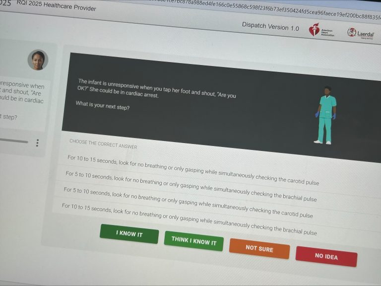
Here is an example of a question from the online scenario portion. As you can see, it not only asks for the right answer but also for your confidence level. Chris explained to me that this helps the program select which questions to ask later on. So if you guess on a question and get it correct but say that you aren’t at all confident in your response, you’ll continue to get quizzed on questions similar to that in order to ensure you know the material.
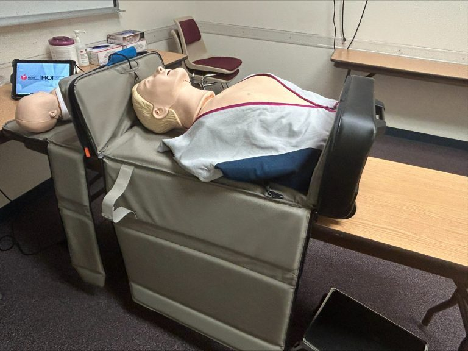
This is the RQI booth itself. The mannequin is hooked up to the tablet, so when you’re practicing CPR, it can score you.
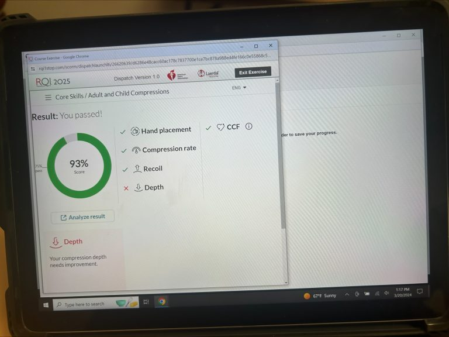
I think I did pretty good.
I think one of the coolest things about this program is just how many resources you have. Chris explained that any workers who are a bit nervous about using RQI can set up an appointment with the education department to be supervised. He said that usually just having someone standing in the room with them makes them feel more comfortable trying it out.
An even wittier comment about Stephanie C. and Zoll
I don’t know what exactly I pictured would be in the room I walked in, but I don’t think it was this.
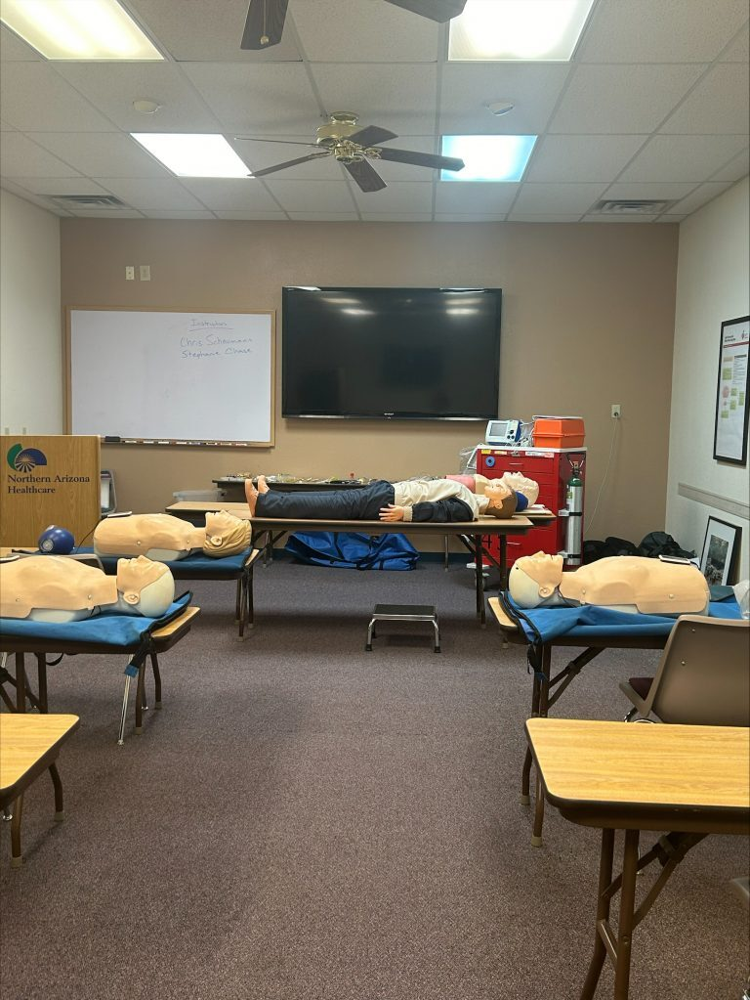
Once again, here are some of the tidbits I learned while talking to Stephanie, who knows everything there is to know about Zoll defibrillators.
Mock simulation once a year to train with Zoll
There is a debrief after every real code
1-2 Zoll devices in every unit on crash carts
Zoll devices self-check to ensure they’re in working order
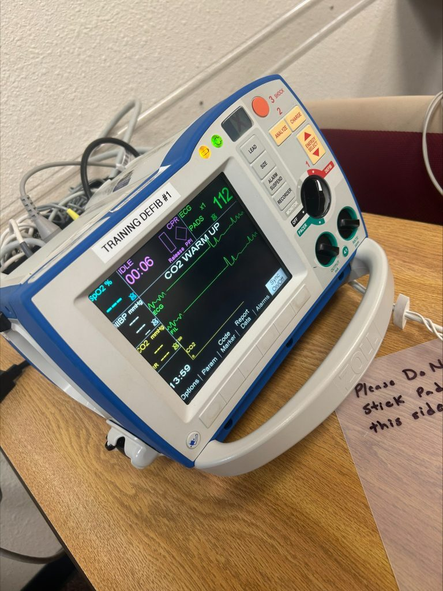
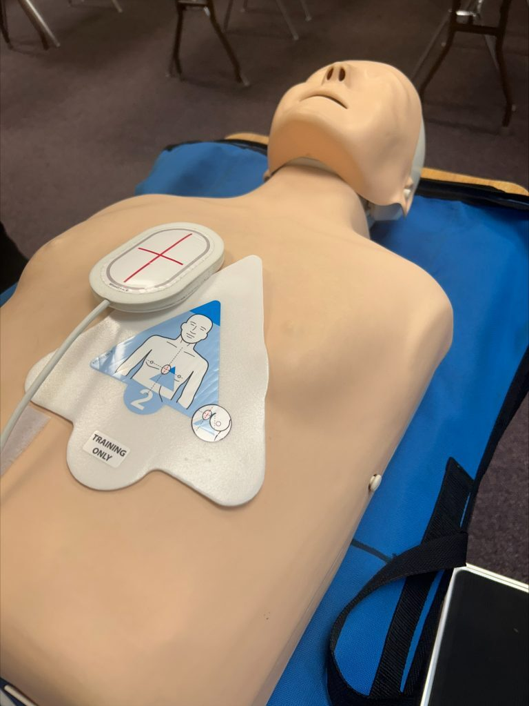
The Zoll device reads your CPR performance through those electrodes and gives live feedback during compressions. Stephanie told me that they’ve begun implementing a CPR coach during codes whose role is to read the feedback and make sure whoever is doing CPR is on the right track. She also noted that “everyone here recognizes bad CPR when you see it”, but the implementation of Zoll has pushed people to call each other out and help each other improve.
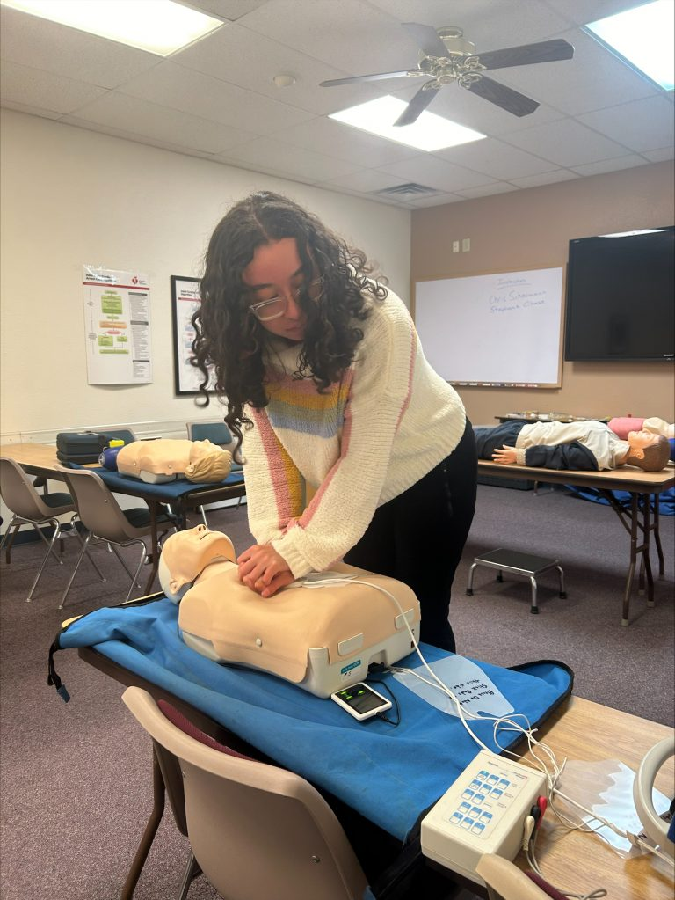
This was not as easy as the training was unfortunately. But at least I look pretty cool!
Now, I’m sure there’s stuff I missed so feel free to ask any clarifying questions!
Update, changed the date to match when it was posted. Thank you, Nathan (go read his latest on heart failure and ask lots of questions!)
One Sick Joke | 4/3
April 3, 2024 12:00 pm
Hi everyone, this is going to be a short one and probably won’t be up to par to my usual posts. My body decided that instead of doing more statistics, it wanted to get sick! So that’s been absolutely wonderful. Now, I did promise to talk about the stuff I’ve been doing on spreadsheets last time so I’ll do my best. I’d show pictures of some of the stuff but I’m currently at home feeling like I have razorblades in my throat every time I swallow. Isn’t the human body such a miracle?
My talk about the data analysis is going to have to come from memory then, since I don’t have access to the files from my personal computer. I promise I’ll do a more thorough update as soon as I can.
One of the biggest things Flagstaff Medical Center and I wanted to know was how do different CPR metrics correlate with patient outcome? Basically, how might reaching the target goals of things like compression depth or rate actually relate to whether the patient survives or not.
My first instinct for this was to do a Point-Biserial Correlation. This is a type of test that checks to see whether a continuous variable (which can take any numerical value within a range, not just whole numbers) is correlated with a binary variable (which can only take one of two possible values). So my CPR metrics could be my continuous variables and the patient outcome could be my binary variable.
Excel already has a CORREL function that did this test. I ran into a few roadblocks at first, like the fact that my binary variable couldn’t be in words, it had to be in 0s and 1s. But I figured out how to transform that so the correlation test would work. 0 was set as an expired status while 1 was set as alive. So if the function gave me a positive number then an increase in CPR metric was correlated with more patients surviving and vice versa for a negative correlation.
Now, in my next blog post I’ll go into more detail as to my process for doing these calculations. It’s not just as simple as telling excel to run this calculation, there are assumptions that must be checked first and graphs to visualize the data. I’ll show some pictures that’ll better explain all of this.
Most importantly, I’ll explain why none of this matters because it turns out this test doesn’t work for the type of data that I have. Feel free to guess why this is in the comments (Hint: it has something to do with CPR metric target ranges). That’s all for this update, I’m going to continue trying and failing to fall asleep in the hopes that it’ll cure me!
What Time Is It? It’s Stats Time! | 4/10
April 10, 2024 12:00 pm
Well after…how many weeks has it been? Seven? Eight? I don’t know anymore. All I do know is that I’m going to finally show you some of the data stuff that I’ve been doing. And yes, I know I talked about it a bit last week but I didn’t have access to my computer so I was running off of memory. I think I did pretty well considering.
Last week, I teased the fact that my CORREL function was quite useless. Let me explain why using chest compression depth as an example. The recommended chest compression depth during CPR is somewhere between 2 to 2.5 inches. You don’t want to go above or below that range. But the CORREL function looks at chest compression depth as an increasing range. Basically, it asks the question: As chest compression depth increases, are there more ones than zeros (more people dying than living)? The problem with this is that this isn’t like a percentage score where the higher the depth, the better. Like I said earlier, there is a target range and anything above or below that could potentially be bad. But the CORREL function doesn’t really capture that.
So instead, I turned my numerical data into categorical data. I put the chest compression depth numbers into 3 categories. Those below 2 inches, those in the range of 2 to 2.5 inches, and those above 2.5 inches. Then I made a little table organizing that alongside the patient outcomes.
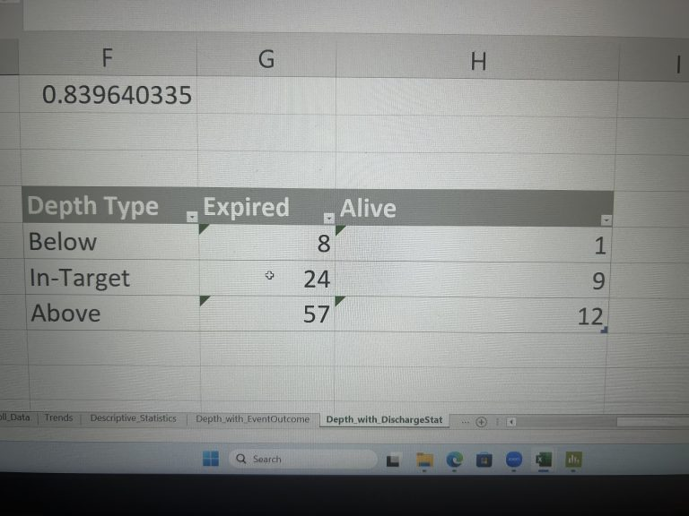
So for example, 9 of the patients who lived were given an average compression depth in-target or in the range of 2 to 2.5 inches. I did this for chest compression depth and range, looking at both event outcome and discharge status (with event outcome being the patient’s life status right after CPR and discharge being the patient’s life status on discharge from the hospital)
What you may notice from the one example given above is that the numbers are quite small. A lot of the patient outcomes were unfortunately listed as unknown, so there’s quite a few gaps in the data. I’ll go more into this later
Instead of using a point biserial correlation, I used a chi-square test of independence. What this test does is that it takes two categorical variables (hence my initial transformation of the chest compression depth data) and compares the observed values with the expected values. If there is no correlation between the two variables, there should be little difference between the observed and expected values. If there is a lot of difference, then that means there may be an association between the two.
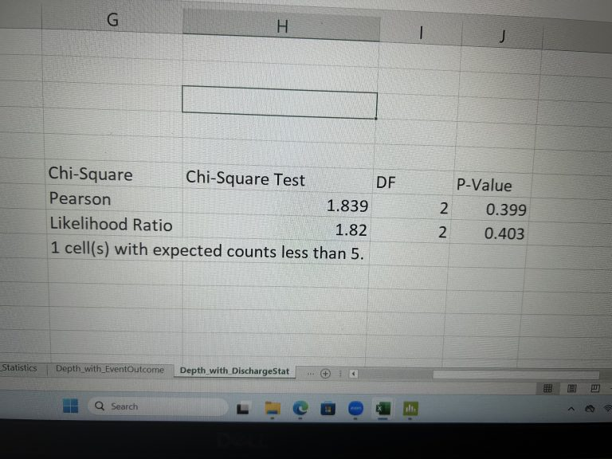
This is the result of the chi-square test for the earlier table I showed you, let me break it down. The first thing you need to do when performing a test like this is to have a null and alternative hypothesis. The null hypothesis would be that there is no association between patient outcome and chest compression depth type. The alternative hypothesis would be that there is an association.
Then you’d look at either the Pearson or the likelihood ration test results. They’re both just different ways of comparing the expected and observed values. In this case they’re pretty similar, so we’re going to look at the Pearson one.
Using a critical value table like the one below, you find the critical value that would match our degrees of freedom, in this case two. You also have to select a probability for exceeding the critical value. The lower this number, the more specific and more accurate it is. It’s typical to select a probability of 0.05.
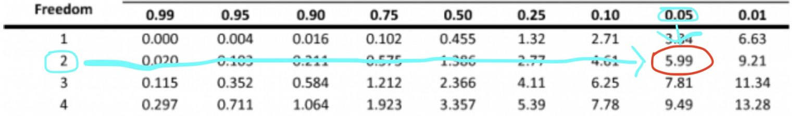
Because our chi-square test of 1.839 is smaller than the critical value of 5.99, we fail to reject the null hypothesis. There seems to be no association between the two variables. But what if the opposite was true? What if the chi-square test gave us 6 instead? Then that might mean there is an association.
The biggest issue though, is the gaps in the data I mentioned earlier. The expected values are calculated based on the row total, the column total, and the overall total. Meaning that if there’s not a lot of data, the expected values are going to end up really small. And if the expected value is less than 5, then the results may be inaccurate. And guess what? Basically every single chi-square test I did had at least one expected value of less than 5. One test was so small that the software I was using refused to give me an actual result!
Now does this mean all of my work was for nothing? No. I’ve set up one possible way to analyze this data. So in a few years, when more and more data has been collected from the Zoll defibrillators, this study could potentially be repeated. And who knows? Maybe that time, there’ll be a more definitive conclusion. Or maybe not, I’ve learned that for every conclusive finding there’s 100 results that aren’t as conclusive.
Speaking of conclusive evidence, in my next blog I’ll be talking about my RQI analysis. Which actually did have some more definitive answers. Exciting stuff!
Data Ramblings | 4/17
April 17, 2024 12:00 pm
Oh man, has it been a week! I took a break from my project and traveled to North Carolina for Ethics Bowl. If you don’t know what that is, it’s basically a competition between teams where you present an argument on an ethical case study. Instead of something like speech and debate where you have to win the argument, in Ethics Bowl you’re judged on how well the argument is presented. It was an incredible experience, even though I was so nervous the entire time. Not to brag but….we’re fourth in the nation!
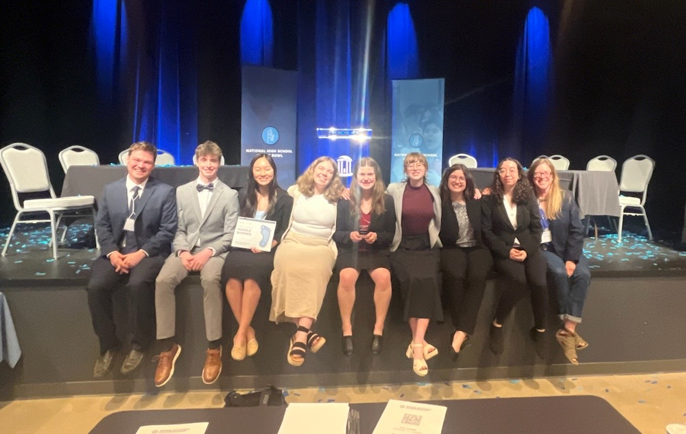
Unfortunately, this meant I wasn’t able to do anything related to my project. The initial plan was to at least work on writing some stuff for my research paper but that was quickly shot down. I found myself much too busy either sleeping or practicing. We even practiced at the airport! People were staring. Oh, the fear of being perceived is a nightmare sometimes.
Not to worry, though. Somehow, I still have updates. I got home on Monday and immediately slept the rest of the day away. Now, did this actually rejuvenate me for Tuesday so I get back to work immediately? Of course not! That would make life too easy. Instead I went to work at the hospital half-asleep until 2 PM, at which point I went home and fell asleep again. All in all, a very productive first day back.
In all seriousness, I did actually get something done. As I’ve stated earlier, the RQI training is split into 4 quarters every year. And so one of the things I wanted to do was see how the number of quarters a person has done might affect their performance in the simulations. The problem was that each row in the data contained one session. So I wanted to look at how each specific worker was doing overall, I needed some way to combine the rows by User ID. To turn this:
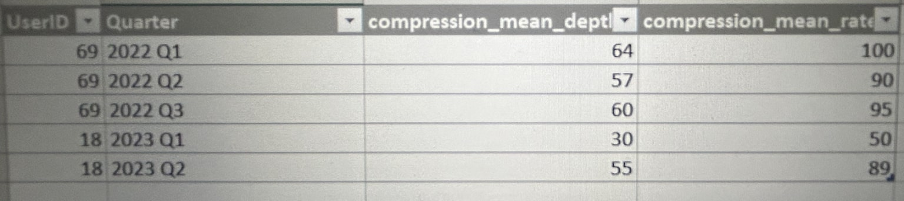
Into this:
<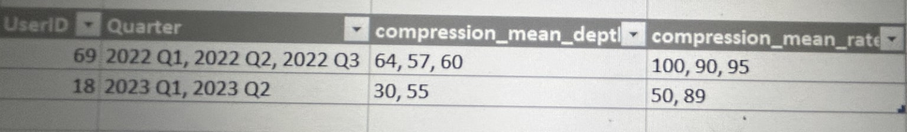
(Don’t worry, these are made up examples.)
In my quest for answers, I stumbled upon an excel tool called Power Query. Now, did I take the time to try to understand what this tool was and how to use it? Of course not. Instead I simply followed the instructions on some random website and hoped for the best! And when it didn’t work, it was then that I actually bothered doing some research. From what I understand, Power Query is a way to transform data so you can analyze it better. It’s probably a bit too powerful to use for a lot of my research, but it worked perfectly in modifying my table. I’ll break down each line for you all.
The “let” expression tells the interface you’re going to be defining some variables.
let
Next, we make a “Source” variable to tell the interface where to get the data.
Then we create a “DepthTable” variable by using a command called “TransformColumnTypes”. The command basically just takes the columns you specify (in this case, UserID and compression_mean_depth) and turns them into whatever type you specify. So here, we tell it to turn those columns into a “text” type so we can perform the next command faster.
#"DepthTable"=Table.TransformColumnTypes(Source, {{"UserId", type text}, {"compression_mean_depth", type text}}),
Then we create another variable called “CombinedDepths” which will just be the “DepthTable” but the compression depth will be organized by UserID using the “Group” function. And inside this, there’s also the “Combine” function which tells the interface how to put these depths together (in this case using commas to separate them).
#"CombinedDepths"=Table.Group(#"DepthTable", {"UserId"}, {{"compression_mean_depth", eachText.Combine([compression_mean_depth], ","), type text}}),
After that, we create another variable named “Changed Type” which will be our final table. Here, we change UserID back into a “number” type. Because I copied this from the internet, it was using different variables that didn’t require both variables to be numbers. In this case, I actually should have changed the depth variable into a number at the end as well. This caused some problems later when I was trying to combine my tables, but luckily there’s also a button that lets me do this as well (it’s just not as automated).
#"Changed Type"=Table.TransformColumnTypes(CombinedDepths, {{"UserId", type number}})
Finally we have the “in” expression that tells the interface what to output or display, which is the “Changed Type” table in this scenario.
in #"Changed Type"
My challenge was figuring out how to do this not just for compression depth but for the quarters and the compression rate too. I spent a lot of time trying to do the code multiple times in the same editor to no avail. Of course, when I finally just looked it up I found that there was literally a button called “Merge Queries”. All I had to do was make three separate tables grouped by UserID (one for depth, one for rate, and one for quarters). Then I just used the merge button to put the tables together. I would have saved a lot of time by just doing a little research beforehand, but you live and you learn!
Now that I have this table formatted, all I have to do is analyze it which should be a lot quicker. Hopefully I’ll get that done and then create a summary of all my findings so my advisor can see if there’s anything missing before I begin working on my final report and presentation.
In other exciting news, I might get to meet with a data analyst at the hospital to ask some questions about their job. You know that this project has really changed me when I’m excited about talking to a person. In fact, I can’t even listen to music without my mind somehow wandering back to it. I’m really going to miss working at the hospital, so I’m trying to make the most of it!
In Which We Don’t Have Time For Pictures! | 4/24
April 24, 2024 12:00 pm
You know, I was quite offended when I found out that writing a research paper actually took work. Nobody warned me of this! Instead of just sitting down at my desk and just magically knowing what to write, I had to actually investigate. One would think that I’d have a better idea of what is needed in a paper considering the sheer amount of things I’ve read this past year for my project. But unfortunately that was not the case. On the bright side, there were plenty of educational resources offered.
I was given a couple of well written research articles by Floye to read through. My favorite was probably the one that she described as “…a good example of a discussion section for a study that did not have any conclusive findings.” I definitely needed that one considering how much of the findings break down to not being able to make statistically significant conclusions. I’m not too upset about that, that’s just what happens in research sometimes. And I think the experience was incredibly valuable! Hopefully in a few years, when more data has been collected, Flagstaff Medical Center will be able to repeat this analysis.
Anyways, back to my paper. I found a nice guide on writing one, ironically in the form of a published article itself. Paperception! Or researchception? I’m sure someone will come up with something better eventually…
I took some notes on what I found to be the most significant for each section.
Abstract
Purpose and significance
Key findings and significance,
How this work is different than others
Shouldn’t evaluate conclusions, just implications
One paragraph b/t 200 and 300 words
No references or abbreviations
Introduction
Show how this paper exists within a larger field
Make reader interested in reading more about subject on a whole
Provide existing knowledge on topic
Explains the existing gap of knowledge this paper will fill
Final statement is hypothesis/thesis statement and how findings relate to hypothesis
Materials and Methods
Necessary so that reader can trust in findings, learn a new methodology, and repeat the study
Narrative/storytelling form
List of materials, description of materials (only relevant description) and where they came from
Could provide images
Describe each procedure and justify it
Results
Should explain the actual experiments done (with Methods section there to explain what that experiment is)
For each experiment, may be good to provide subtitle and brief introduction justifying it
Restate the hypothesis/what we’re looking for
If experimental design, important to identify all variables clearly
Enough details provided for replication but not beyond
Use tables/figures to gather up important data in a way that summarizes relevant info
Once again, storytelling aspect to explain things
Connect results to goal of study
Don’t interpret results though! (Save for Discussion section)
State limitations, weaknesses, and assumptions
Discussion
Gather main results to highlight significant results
Patterns in data are shown
Other explanations for findings (ie errors) and analysis of quality of experiment
Results shouldn’t be restated willy nilly, just things that need emphasis
Link results to overall topic shown in Introduction
Suggest further studies based on knowledge gathered here
Reference
Follow accepted format
Other
Tables and Figures
Detailed titles
Legends
Interval markers
Axis Labels
Should be numbered in order they appear
Explain unusual abbreviations
I wouldn’t say that I’m following this completely. Just by reading a few articles you’ll find that there’s lots of variations, still the spirit is there. I’ve already done an abstract and an introduction. I say this proudly as if it’s the hardest aspect, which it definitely is not.
I’d tell you what the hardest section to write is but that would require me having written all of the sections, which I have decidedly not done. Don’t feel too disappointed, I am a few paragraphs into the results so I’m making progress. Slow progress but progress.
In between writing my paper, I’m also preparing my presentation. I’d feel more worried about having only gotten 3 slides done but I’ve agreed to practice presenting with my internal advisor Mrs. Buckley next Monday. And nothing gets me moving like a time crunch!
Speaking about time, I do have to continue working on things. I’m meeting with a data expert at 2 PM today and she will hopefully not tell me I’ve done everything completely wrong because that would be awkward. I’ll see you next week for my penultimate (maybe? I’ve lost track at this point) post.
Time Is Irrelevant | 5/3
May 3, 2024 2:13 pm
Now, is this technically late? Maybe. Or maybe not. Time is relative, after all! So I say that this is perfectly on time. I can’t believe that this is my last blog post (well, there’s technically one more but I’m trying to be dramatic).
And boy, have I been busy! To procrastinate on my presentation and the idea of having to talk in front of a bunch of people, I spent time working on my research paper. Which I quickly regretted as I realized I had to share said presentation multiple times to my faculty advisor, senior project committee, and my external advisor. Then it was a mad rush to get something made. I’m quite proud of it, to be honest. You guys are in for a treat Monday, as long as I don’t blank out halfway through. Now where does this leave my paper? In limbo. I’m going to be busy this weekend…but my best work gets done last minute if my powerpoint is any proof.
I think my faculty advisor was quite impressed with the progress I made from when I showed her Monday to when I showed the board Wednesday. I went from scrolling through my rushed script to find my place while I talked to not having a script at all! And the practice was not as terrifying as I had made it out to be in my head. I’m starting to realize that most things aren’t as terrible as I make them out to be.
Di-Did that cure my anxiety?
…
Nope.
Moving on, I had a grand old time also hearing the other hospital projects. It was so much fun hearing their findings because I’ve been seeing a lot of their process since the beginning. Almost enough to bring me to tears. Almost.
If you want to check out all of the other hospital projects, here they are: Nathan, Delaney, Kei, Serra, Aiyana
I also showed my external advisor the presentation. She approved so I think I’m safe. And then today in the afternoon, I practiced in the auditorium. I actually remembered things, so I’d say I’m prepared. Here’s a sneak peek of the auditorium.
After I was done practicing, it was Kei’s turn. Kei and Serra did a project together, but Serra couldn’t make it. Guess who got to fill in?
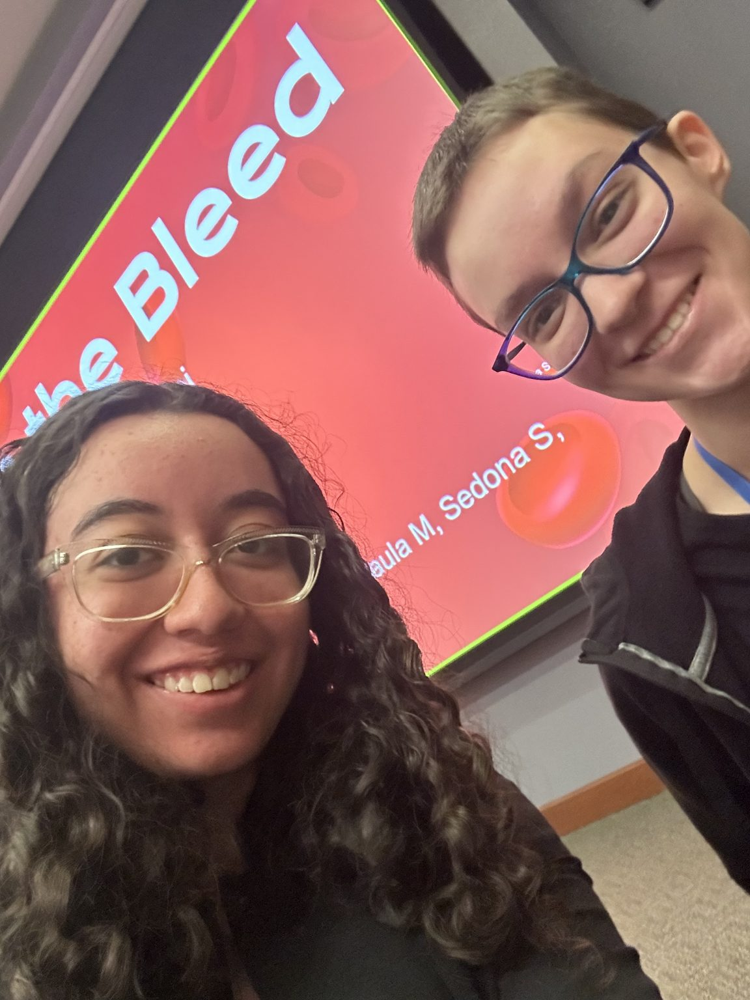
I think I did a great job, and nobody can prove otherwise.
With that, my final presentation will be this Monday, May 6th from 5-7 PM. It’s at Flagstaff Medical Center, McGee Auditorium.
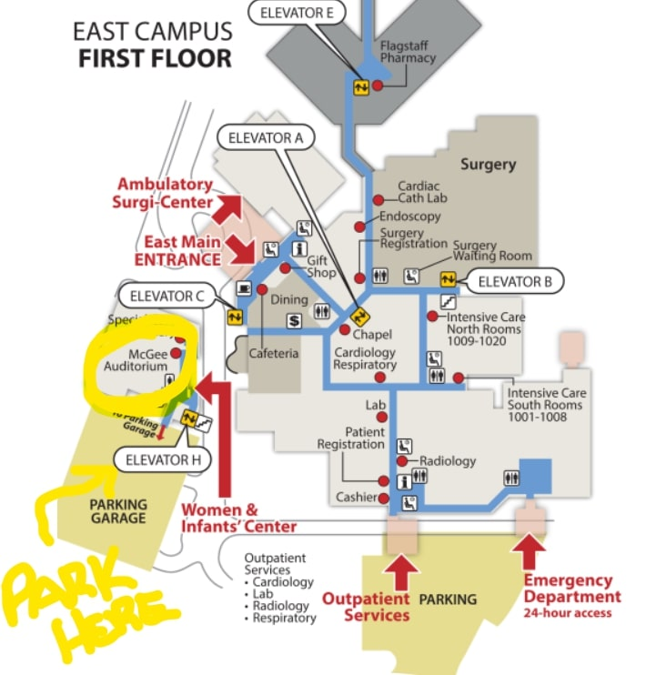
Wish me luck!
Oh, The Places You’ll Go! | 5/7
May 7, 2024 1:58 pm
Well…this is it.
Thank you so much to everyone who’s been reading these blogs as well as to everyone who came to see the presentations. I think all of the hospital presentations were amazing!
Also, thank you to everyone who’s helped me throughout this journey as well. Especially my external advisor, Jessica O, who dealt with me often sending her 20 emails in a day, and my faculty advisor, Jessica B, who dealt with me popping up randomly to tell her 50 things and then disappearing. They were so incredibly supportive, and I’m so grateful that they were my advisors. I’m also really grateful to everyone at NAH, who gracefully handled having a bunch of high schoolers running around, and went above and beyond in supporting us. I’ll probably be attaching my powerpoint presentation and my final product later, I just need to make sure I’m not accidentally breaking confidentiality somewhere before I do!
Now, onto some internal reflection (except it’s being done externally because this is a blog post and as far as I know mind reading hasn’t been…discovered yet.)
It’s funny, my parents asked me afterwards if I was nervous going up there. And to be honest? No, I wasn’t. I had been incredibly anxious a few hours earlier, and the last few weeks leading up to this. But when I got to the auditorium, a lot of that had washed away. I don’t really know why. Maybe it was seeing all familiar faces trickling inside. Or having the rest of the senior project people there with me.
Or maybe it was my very genius psychological strategy of telling myself that people have done incredibly embarrassing things in front of a lot larger audiences. And if they could survive that, then I can survive talking for 15 minutes! (No literally, I have multiple youtube shorts saved in my phone now of people doing cringey things on purpose without any shame, and I aspire to have that kind of confidence)
In all seriousness (ew) the more I thought about my presentation, the more excited I got. I think that’s what surprised me the most. I’ve done presentations before, maybe not on this level but still…I thought the feeling would be the same. But I’ve never cared as much about those other presentations as I have this one. I worked for 10 weeks on this (more, if you count all of that time researching and writing a proposal) and I wanted to share what I had done. I don’t really like having attention on me, so it was a strange feeling to realize that I wanted people to hear what I have to say.
I won’t go ahead and say that the senior project was always easy or fun. It really pushed me out of my comfort zone. I had to interview people! Which for some people, that might not be a big deal. But believe me when I say that if you took the me from last year and asked her if she could do all of the things I did during my internship, she would have laughed in your face. Yet somehow, I did it.
And I’m so glad I did. I really do think that you need a little bit of anxiety in your life sometimes (which is something I enjoy telling my cats as they dodge my friends who are trying to pet them). It keeps life from being stagnant and it helps you grow.
I mean…what else would I have done with my life after classes were over? Get a job and be a productive member of society?
Ha.
No.
And I definitely think I’ve changed and become more confident. Because it’s not just “talking to strangers” or “presenting in front of a large audience” that was scary. It was the fact that this was something I cared about, and I had to put myself out there. There’s a lot of vulnerability in sharing things you genuinely have a commitment to, a kind of vulnerability that isn’t always there if this had been just another school project I had to do for an A. I’ve always avoided that kind of vulnerability because it requires trusting others to not…well, crush your spirit. And while I’m sure that there are people out there who might try to do that, I certainly couldn’t find them. Everyone I’ve talked to has been nothing but kind and interested and supportive.
In a few months, I’ll be in college. There will be kind people. There will be mean people. People who don’t care about me at all, and everybody in between. And it will be challenging. I’m looking forward to it. I’ve learned that challenging can be a lot of fun.